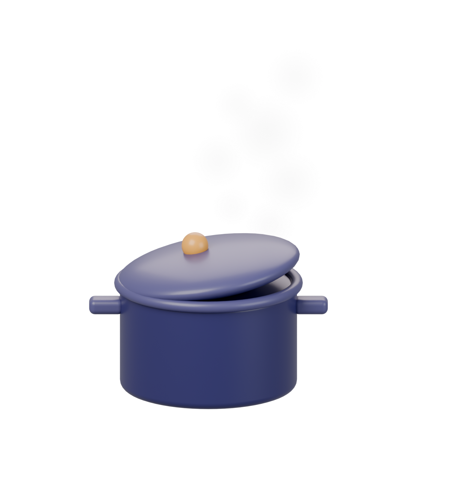

Order №02 · Simmering
DraftShield
is still cooking.
A privacy-first second look at your X drafts, before you hit post. Not ready to taste yet — and we won’t serve it half-done.
✓ Prep
Cooking
Plate

RECIPE CARD№02
What’s going in
- 1Rule-risk review in the X composer
- 2Runs privately, in your browser
- 3A pause before you publish
No waitlist, no sign-up. When it’s ready, it goes on the menu.